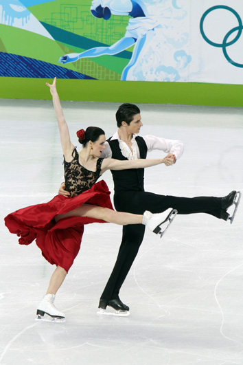
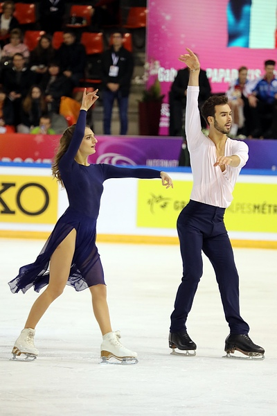

Ice dance is one of my favorite disciplines to watch because each team brings such a different set of strengths and artistic style to their performance.
Small details like edges, timing, and chemistry make a huge difference.
The teams below are skaters whose Olympic performances I always come back to— they are simply iconic.
Each pair has a unique style, but they all have incredible skating skills, memorable music and choreography,
and the ability to captivate the audience.
Ice Dance Legends
Tessa Virtue and Scott Moir

Among the most decorated figure skaters in Olympic history
Huge career arc: Vancouver champions, dramatic Sochi rivalry, then a comeback to win again
Versatility, skating skills, and performance quality are unmatched
Gabriella Papadakis and Guillaume Cizeron

Olympic champions
Known for expressive modern style and extraordinary fluidity